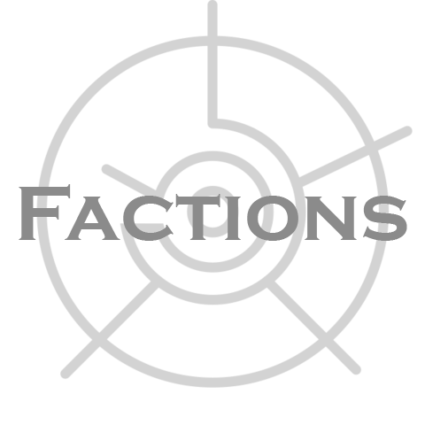

Here rest the vanguard of the Forerunner Ecumene, every testimony and data log from first to last. Each holding a piece of information of the galaxy's over 100,000 year history. From the fall of the Forerunners to the rise of the humans. Each created and consumed in times such as these. Take care of your time here Reclaimer as we cannot afford to repeat the sins of the past.
